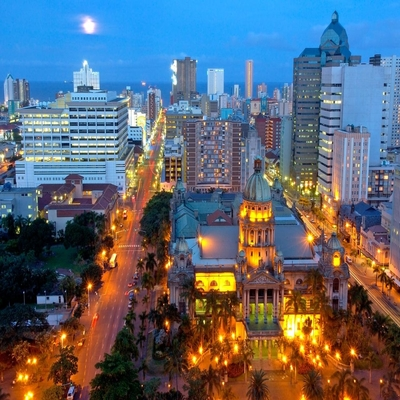
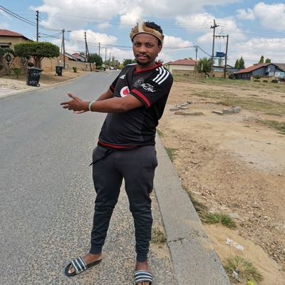
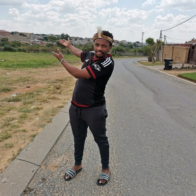

Walter
Which city

I want to visit the city of Durban just for holidays because that city is warm and it's sea is
warm too so I just wanna be there and experience all that cool and warm weather.
Many people says Durban is clean and safe for tourists, I think that attracks me because I'll be
safe while I'm enjoying myself in that part of South Africa. Durban is also not that
far from Johannesburg so I think it will not be that hard to visit it.
Foreign Language
I would like to learn French language because this is an international language that is used by
many countries especially African, I think we have 24 African countries that speak French
. Those who knows this language says it's easy to learn so I want to try it and see, It's
important to be multilingual.
| English | French |
|---|---|
| Hello | Bonjour |
| How are you? | Comment vas-tu? |
| What is your name? | Comment vous-appelez vous? |
| Where are you coming from? | D'ou` viens-tu? |
| Thank you | Merci |
Historical places
Diepkloof

This township it's in Soweto, it's called Diepkloof where the youth of Soweto were protesting
against poor and Bantu education, it was the 16th of June 1976(today it's called Youth day). It
was
a difficult day for Soweto residense especially the ones from Diepkloof, Orlando and Chiawelo
because many students were killed by police officers
while they were protesting. There was a chaos in this place I'm at where buildings(including
West Rand Administrative buildings) and vehicles were burnt
down by the angry students.
Sharpeville
Here I'm in Sharpeville police station, we'll remember that police officers killed many people in
Sharpeville township on the 21 of March 1960(today it's called a Human rights day).
It was also a dark day for Sharpeville residence because they saw something that they thought
they'll see in their lives. Sharpeville is a black
township located near Vereeniging in Gauteng where this tragedy happened. People were marching
on the streets and police officers killed them just like
that.
Sophiatown

Sophiatown also known as Sof'town or Kofifi, is a township of JHB, South Africa.
Sophiatown
was a legendary
black cultural township that was destroyed under apartheid, rebuilt under the name of Triomf. In
2006
officially returned
to its original name which is Sophiatown. Sophiatown was one of the oldest black townships in
Johannesburg and it's
destruction represents some of
the excesses of South Africa under apartheid. It produced some of South Africa's most famous
writers, musicians,
politicians and artists.